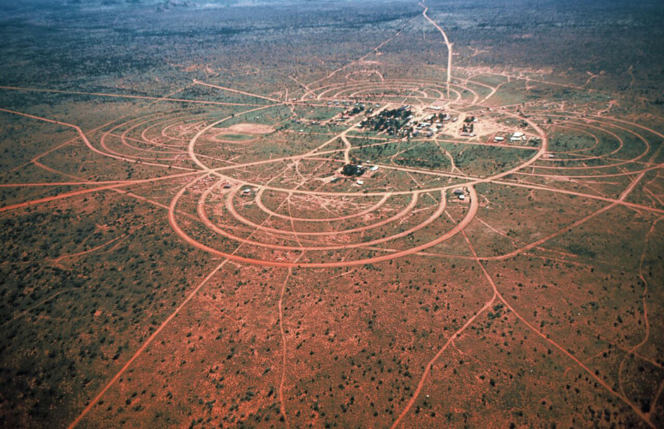

<h2> Who Am I? </h2>

<!-- Rstack  -->
<div class="r-stack">

  
  

  <caption>Mick Ngamurarri (Sandhill Travelling Dreaming) 1972,</caption>
  <caption> Honey Ant Dreaming streetscape, aerial view, Papunya Community. Photograph: Max Stollznow, 1976</caption>

</div>


<aside class="notes">

  <ul>

    <li> Wait didn't I already talk about myself?
      Well, my name is Ngamurarri, also Tjapaltjarri, also Tjapali, or sometimes Kalipapu, Kalipap,
      I actually still have a few more </li>

    <li> I come from Papunya, Warumpi, a community 250km north west of Alice Springs
      Home of the Papunya Tula Arts or otherwise known as The Dot Painting Movement </li>

    <li>I'm also passioante about FOSS (free-open source software)
      and aim to extend that to my outputs during my PhD - including the literature.

    </li>

  </ul>

</aside>
